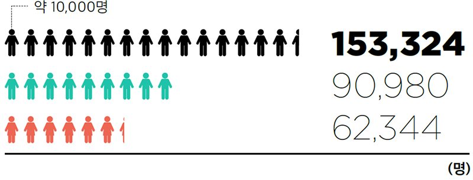
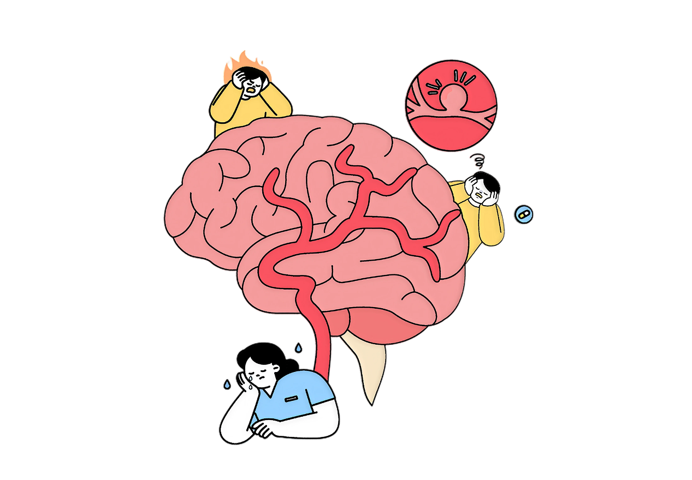
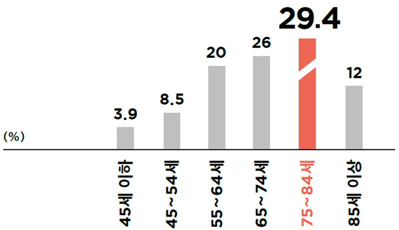
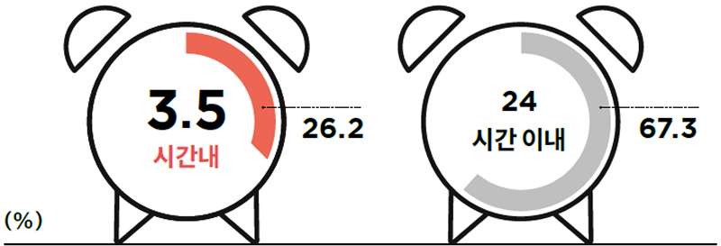
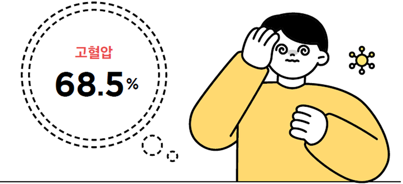
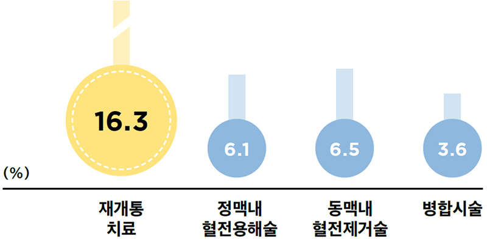
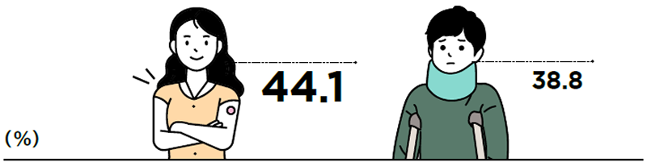

2012년부터 2022년까지 우리나라 68개 병원에 등록된 전체 뇌졸중 171,520명 가운데 허혈뇌졸중은 153,324명(89.4%)으로 대부분을 차지했다. 이 가 운데 남성은 5 9.3%, 여성은 40.7%로, 환자 10명 중 약 6명이 남성인 셈이다.
뇌졸중 환자에게 신속하고 적절한 진료는 절대적이다.
일산병원은 병원 도착 120분 이내 동맥 내 혈전제거술
실시율 100%, 기능평가 실시율 100%, 조기재활 평가율
99.5%를 기록하며, ‘급성기 뇌졸중 적정성 평가’ 에서
11년 연속 1등급을 획득했다. 여러 진료과 의료진이
긴밀하게 협력한 다학제 진료가 있어 가능한 일이었다.
분초를 다투는 현장에서 분투하고 있는 이들을 만나보자.


2012년부터 2022년까지 우리나라 68개 병원에 등록된 전체 뇌졸중 171,520명 가운데 허혈뇌졸중은 153,324명(89.4%)으로 대부분을 차지했다. 이 가 운데 남성은 5 9.3%, 여성은 40.7%로, 환자 10명 중 약 6명이 남성인 셈이다.

허혈뇌졸중은 고령층에서 두드러진다. 특히 75~84세가 29.4%로 가장 많았고, 65~74세가 26.0%로 뒤를 이었다. 65세 이상을 모두 합하면 67.5%, 환자 3명 중 2명 이상이다. 눈여겨볼 것은 초고령 환자의 증가다. 2022년 85세 이상 환자는 12.1%로, 2012~2014년 6.6%와 비교해 약 2배로 증가했다.
반면 55세 미만 환자는 2022년 12.4%로 지난 10년간 감소했다

2022년 허혈뇌졸중 환자 가운데 발병 후 3.5시간 이내 병원에 도착한 환자는 26.2%, 환자 4명 중 약 1명에 그쳤다. 24시간 이내 병원을 찾은 환자도 67.3%로 약 3명 중 2명 수준이었다.
이러한 비율은 지난 10년간 큰 변화 없는 수준을 유지하고 있다.

허혈뇌졸중 환자에게서 가장 흔하게 나타난 위험인자는 고혈압으로 68.5%에 달했다.
환자 10명 가운데 약 7명에게 고혈압이 있었던 셈이다. 이어 이상지질혈증 43.2%, 당뇨병 34.7%, 흡연 21.7%, 심방세동 19.8% 순으로 나타났다. 더 주목해야 할 것은 뇌졸중으로 입원한 뒤에야 위험인자를 발견한 환자도 적지 않았다는 점이다. 고혈압 환자 10명 중 1명, 당뇨병 환자 8명 중 1명, 이상지질혈증 환자 10명 중 3명, 심방세동 환자 2명 중 1명은 입원 후 처음 진단됐다.

막힌 뇌혈관을 다시 열어 혈류를 회복시키는 재개통치료를 받은 환자는 전체의 16.3%였다.
세부적으로는 정맥으로 혈전용해제를 투여하는 정맥내 혈전용해술 6.1%, 혈관 안으로 기구를 넣어 혈전을 제거하는 동맥내 혈전제거술 6.5%, 두 치료를 함께 시행한 병합시술은 3.6%로 나타났다.

치료를 받은 허혈뇌졸중 환자의 44.1%는 일상생활에 큰 제약이 없는 상태로 퇴원한 반면 38.8%는 일상 생활에서 일정 부분 다른 사람의 도움이 필요한 장애 상태로 퇴원한 것으로 나타났다.